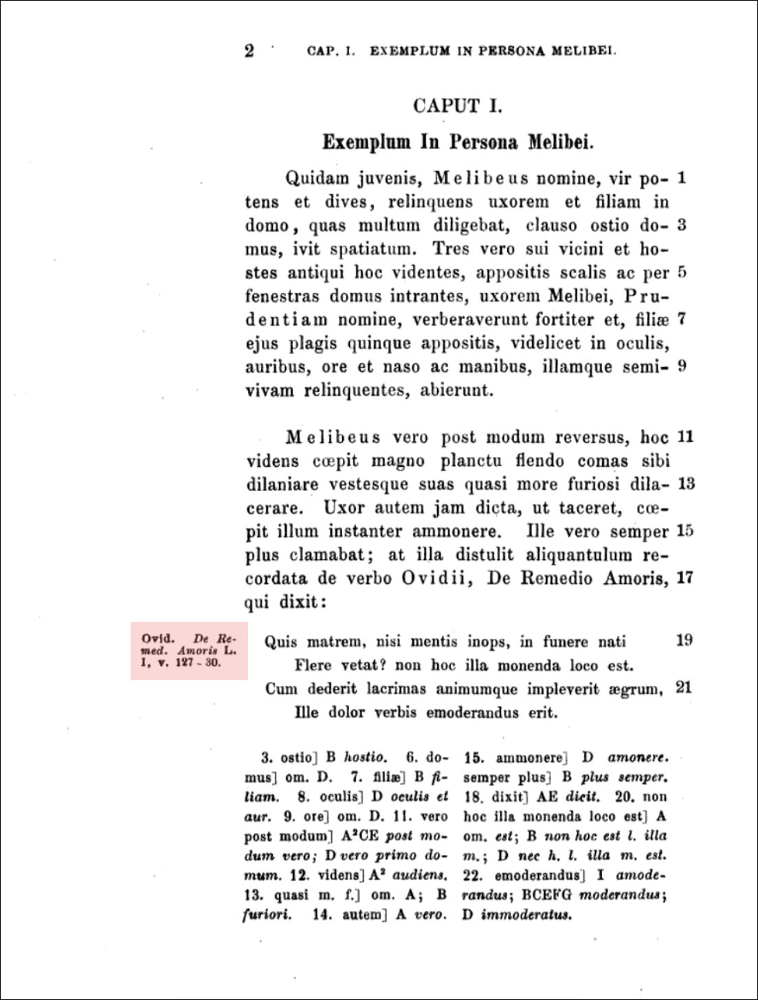
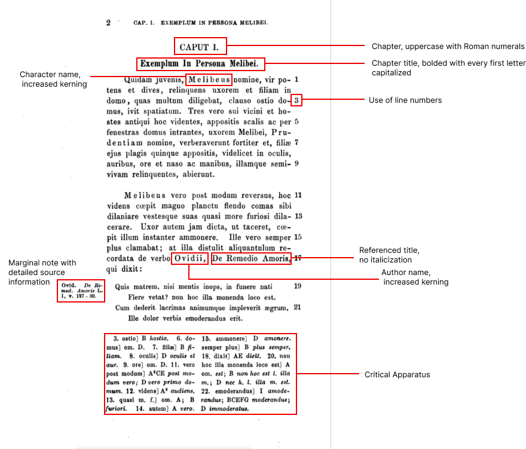
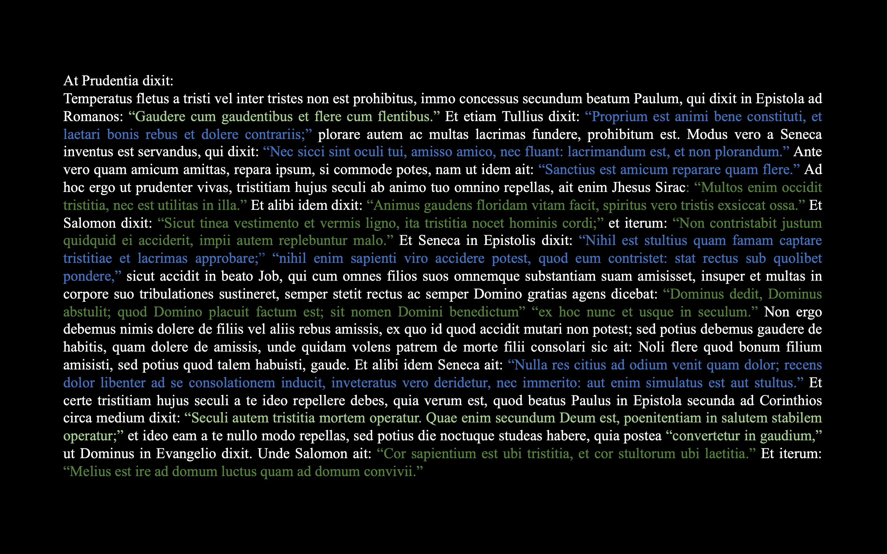
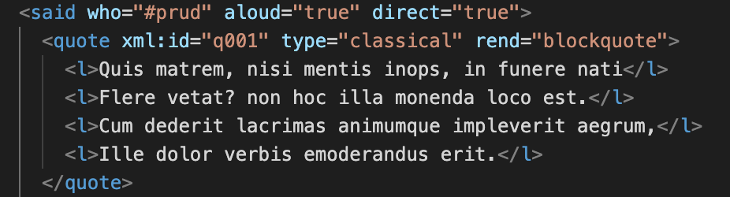
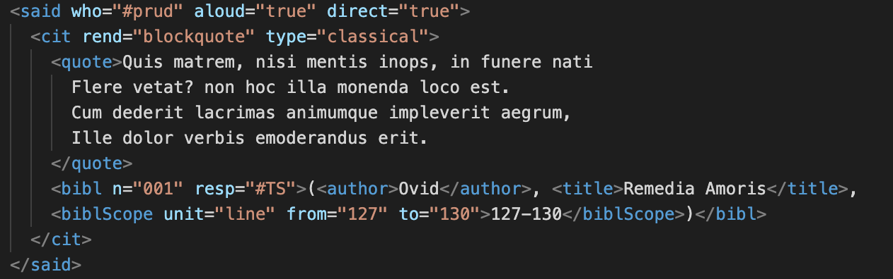
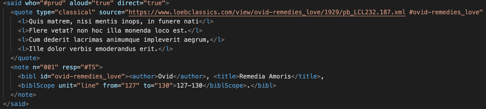
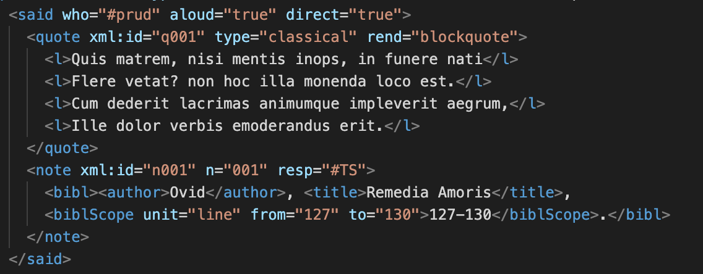
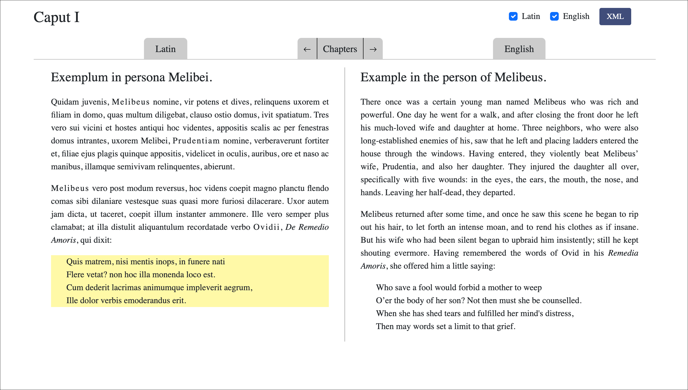
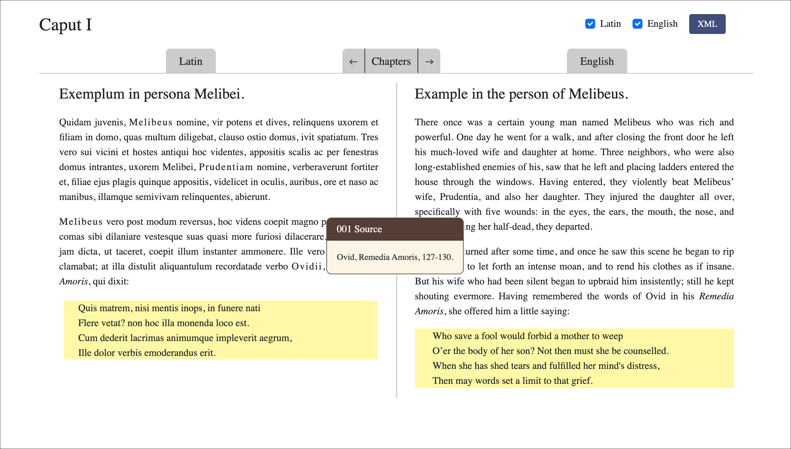

About
The Liber Consolationis Digital Edition is an ongoing research project by undergraduate students of Washington and Lee University under the direction of Melissa Vise, Assistant Professor of History, and Mackenzie Brooks, Associate Professor and Digital Humanities Librarian. The project welcomes a breadth of interests including (but not limited to) medieval history and literature, classics, digital humanities, data science and coding.
The project aims to preserve and present Liber Consolationis et Consilii in a more comprehensive and interactive format with Text Encoding Initiative (TEI). Textual transmission and encoding decisions are explained below. To learn about the historical context of Liber Consolationis et Consilii, read here.
Margaret Alexander, Class of 2024
Ben Hess, Class of 2023
Latin to English translator (June 2023).
Andrew Wright, Class of 2025
Latin to English translator (June 2023).
Nayongi Borthwick, Class of 2023
Site logo, web design, and source verification.
❧ Evolution of the Text
❧ From Manuscripts to Critical Edition
While Liber Consolationis et Consilii was originally published in 1246, the core Latin text on this site is from Thor Sundby's 1873 critical print edition, published by The Chaucer Society in London. It has since been digitized by Google Books. Sundby’s critical edition is the product of 15 collated manuscripts. To get a better idea of what Sundby was working with, here are the first pages from two manuscripts, designated by Sundby as A and A2, respectively.

While raw manuscripts are not the primary focus of this project, one should note the lack of marginalia in the manuscripts. Sundby’s most remarkable contribution—aside from laboriously noting textual variants—was verifying over 500 external referrences that would not have been present in the manuscripts. Within the text itself, Albertano usually introduces a quote with the attributed author and occasionally the title of the work, though this is less common. However, many quotations are attributed passively: consuevit dici—translated as it is accustomed to be said. Even when an author and title are explicitly named, Albertano never includes numerical identifiers (chapters, verses, line numbers, etc.). Here is the first page of Sundby’s text:
Notice that in the margin Sundby provides a specific reference to Ovid’s Remedia Amoris (the portion highlighted red). The foot of the page is set aside for the critical apparatus. The following is a breakdown of each textual component with its respective formatting. Some of these formatting choices are less common today, such as increasing the kerning of a name.
❧ From Critical Edition to Digital Transcription
In 2000, scholar Angus Graham digitally transcribed Sundby's text into a Word document. Graham changed Sundby’s marginal notes to footnotes, indicated by superscripted numbers. He also added around twenty notes on sources that Sundby had not included. He marked these contributions in red text.
However, he silently updated Sundby’s notes to reflect modern standards. For example, “Ovid. De Remed. Amoris L. I, v. 127-30.” became “Ovid, Remedia Amoris, 127-130.” This example is a less drastic change than others because numbered verse tends to remain consistent over long periods of time in comparison to the numbering systems of prose.
Transcription Errors
As expected, Graham made human errors when transcribing Sundby’s text. The 44 identified errors can be characterized in one of the following ways:
- Omission or insertion of letters
These errors resulted from mistyping a word by hitting the wrong key and are most obvious (and therefore easy to correct). They are less likely to impact the translation when a consonant is missing or added, but could affect the translation where a vowel changes the case of a noun or the tense of a verb (verbs that end in “nt” where they should end in “m” are the result of Microsoft spell-check).
- Example: et maxime a senibus consilium postulanfum est.
- Correction: et maxime a senibus consilium postulandum est.
- Misinterpretation of letters
While we do not know about the physical source Graham used to transcribe, he likely used an original version with poor or aged printing, or he used a poor scan or microfilm. This made it difficult for him to distinguish between two letters—most commonly “e” and “c”. This could affect the translation.
- Example: ut hominem experiri omnia cogat cumque mendacem faciat
- Correction: ut hominem experiri omnia cogat eumque mendacem faciat
- Omission of phrases where a word is duplicated
Perhaps Graham’s most crucial mistake is the omission of entire phrases. This happened whenever there was a duplicated word in a phrase. Graham likely transcribed small four-to-five word chunks at a time. When his eyes returned to the source, he would see the word that he had just left off in a different (but close) location to the first one.
- Example: Consilium vel secretum absconditum quasi in carcere suo tenet ligatum
- Correction: Consilium vel secretum absconditum quasi in carcere tuo est retrusum, revelatum vero te in carcere suo tenet ligatum
Though these discrepancies are usually clear, corrections to Graham's transcription have been marked within the TEI.
At its surface, Liber Consolationis et Consilii is less of a story than a moral dialogue. The majority of the text is speech between characters with minimal third-person narrative describing the characters’ actions. The plot is rather simple: Life-long enemies of Melibeus beat up his wife and daughter, he counsels many individuals, and chooses not to pursue vendetta. The dialogue contained therein, however, is dense, complex, and perhaps contradictory.
Text analysis by Voyant reveals that aside from common prepositions and conjunctions, dixit (translated as he/she/it said) is the most frequently occuring word, with 190 occurences. This excludes conjugated variants dixi (22), dixisti (14), dixerunt (7), dixero (2), dixerim (2), dixisse (1), dixeris (1), and dixerat (1). The defective ait (he/she/it says) occurs 116 times. Verbs from the present tense stem dic- are as follows: dicitur (24), dici (23), dicit (18), dicere (13), dicens (10), dicunt (9), dico (6). The passive participles dictum and dicta occur 21 times combined.
In summary, there are at least 527 words that introduce speech, whether direct exchanges between characters or quoted external references. Like other medieval works, Liber Consolationis et Consilii draws upon the sayings of numerous classical authors including Cicero, Seneca, Ovid, and Horace. However, unlike other medieval moralists, Albertano does not exclusively quote the ancients but also the Bible and early Christian writers (Sundby, 1873). Having a clear understanding of how Albertano intertwines biblical and classical authorities (especially based on topic) could give us insight about continuity and/or discontinuity of justice between the classical era and middle ages. That of course, is only one example.
Below is a visual representation of how often characters quote other sources. Portions of Prudentia's dialogue from chapter 2 are highlighted in different colors according to source types: Old Testament (dark green), the New Testament (light green), and classical sources (blue). Here, the quotes roughly make up 46% of her speech.
❧ Digital Edition Formatting Decisions
After establishing the importance of quotes and identifying their sources, we can more easily explain the encoding and display decisions.
Tags related to speech
- The said tag indicates direct speech between characters. The who attribute distinguishes between Melibeus (#melib), Prudentia (#prud), and any other speaker (#other).
- The quote tag introduces external material cited by the characters.
- The type attribute indicates the broad category of the quote: classical, biblicalOt (biblical, Old Testament), biblicalNt (biblical, New Testament), churchFa (Father of the Church), lawMed (medieval law), scMed (medieval school text), and contMed (contemporary medieval). To read more about these distinctions, visit the External References page.
- The quote tag also includes an xml:id to link the quote to its corresponding note and English translation (there are two separate xml files for the Latin and English translation).
Consider the following example:
Here, the speaker is Prudentia (#prud). She is quoting Ovid's Remedia Amoris. The xml:id is "q001", which is a unique identifier. Note that this is only meta information and not displayed in the actual text. The pop-up note decisions are explained next.
The Problem of the “Footnote”
In this project, we encountered difficulty with the semantics of a “note.” TEI allows for much flexibility, but the goal should be to encode as closely to the source as possible. We aren't simply putting Sundby's edition online because (1) we are adding to and correcting his scholarship, and (2) TEI encoding allows us to display the text in a creative and user-friendly way that can help us better understand the text. With this in mind, we had difficulty figuring out how to name, encode, and display notes.
Originally, these notes were wrapped within a cit tag with their paired quotes as shown below:
Because note tags are free floating within a text, we wanted to use this method to show that the entire quote corresponded to a note, rather than just the preceding word, as would be the case for translation and commentary notes. However, we decided against this method because it implies that the bibliographic entry is part of the core text. It is not. In our second approach, we used the note tag to clarify external references. These “source notes” were linked to their respective quotes by using an id found within the source attribute of the quote (in this case, #ovid-remedies_love):
Once again, however, we simplified our approach:
Notice that the note attribute has an xml:id similar to that of the quote attribute ("n001" instead of "q001"). Further sourcing and bibliographic information can belong exclusively in the note.
The resp attribute identifies the individual responsible for the note. In this case, it is #TS, Thor Sundby. The n attribute is consistent with Graham's footnote number, though superscripted numbers are not displayed for reasons explained below.
❧ Displaying TEI with CETEIcean
Using CETEIcean, a Javascript library, we can display TEI in a web browser. CETEIcean loads the TEI file dynamically and renames the elements to follow Custom Elements. This allows us to style elements according to how the text functions semantically rather than simply applying style without a stated reason.
For example, we can mark up the CETEIcean CSS to italicize all biblical quotes rather than italicizing each individual biblical quote.
Note Hover and Display
We have already established that these 557 quotes make up the majority of the text. They are already easily indentifiable by italicization for biblical quotes or single quotation marks for any other quote. For this reason, we did not think it necessary to place superscripted characters by a quote.
When hovering over a quote, it will be highlighted.
When clicking on a quote, the corresponding quote of the other language will highlight with the note appearing in the center of the page. This will help readers understand how we translated a particular quote.
❧ What modifications have been made to Sundby's text?
- Line numbers no longer exist.
- Each paragraph in the text is numbered according to its respective chapter with the dot as a separation marker. For example, 1.3 identifies the third paragraph of the first chapter.
- Dipthongs have been removed. For example, cœpi now reads as coepi.
❧ Creating a Translation
❧ What English translations were consulted in the translation process?
For biblical references, we initially consulted the New Revised Standard Version Updated Edition (NRSVUE), but ran into trouble when verses from Ecclesiasticus (The Book of Sirach) which Albertano cited were nonexistent in that translation (the Greek and Latin manuscripts differ greatly). We switched to the Douay-Rheims Catholic Bible for consistency. However, we are in the process of creating a feature with comparative NRSV referrences.
For classical references, we consulted Loeb Classical Library.
❧ Technical Notes
This website is built using Bootstrap 5. While no templates were adopted and the layout is original, many features of this website drew on the formatting of other sites. For example, the grid of chapter numbers accessible from the text via the “Chapters” button was inspired by Columbia University’s “Digital Dante” site. The option to download the xml is a common feature on many sites, but “Perseus Digital Library” from Tufts University is the earliest example. Perhaps the most influential site was that of the “Huon D’Auvergne Digital Archive” for JavaScript collapsibility for viewing different text displays simultaneously (i.e., the TEI, the manuscript, and notes). We hope to be able to apply this to viewing one or both languages (Latin and English).
As previously mentioned, the primary text is Thor Sundby’s 1873 Critical Edition. While this project has not yet determined the display of different comparative manuscripts, the “Piers Plowman Electronic Archive” provided a detailed approach.
Professor Jeffrey Barry greatly assisted this project by familiarizing me with the CETEIcean Github repository and providing further insight into the hover-highlight note approach.
Figma was used on the images highlighting textual components of Sundby's text.
Flourish was used to created the charts on the external references page.
Lengthy Word documents and Excel spreadsheets contain the source notes with detailed comparisons of Albertano's text and the original source. These will be used to create expanded notes accessible via the pop-up.
❧ Bibliography
Brescia, Albertano da. 1290. “Middelnederlandse (rijm)spreuken in Latijns handschrift.” https://opac.kbr.be/Library/doc/SYRACUSE/10748126/middelnederlandse-rijm-spreuken-in-latijns-handschrift.
Brescia, Albertano da, de Louhans; Renaut, Giovanni Boccaccio, Franciscus Petrarca, Philippe de Mézières, and Jacques Bruyant. 1454. “[Le Mesnagier de Paris].” https://opac.kbr.be/Library/doc/SYRACUSE/18356420/le-mesnagier-de-paris.
Chaucer, Geoffrey. n.d. “7.5 The Tale of Melibee.” Accessed April 10, 2023. https://chaucer.fas.harvard.edu/pages/tale-melibee-0.
Fotheringham, L. S. (2007). The Numbers in the Margins and the Structure of Cicero’s “Pro Murena.” Greece & Rome, 54(1), 40–60. http://www.jstor.org/stable/20204178.
Fox, Madeline Rose. 2021. “Optical Theory and Feminine Auctoritas within Chaucer’s the Tale of Melibee with an English Translation of Albertanus of Brescia’s Liber Consolationis et Consilii in Full.” University of Pittsburgh ETD. University of Pittsburgh. April 12, 2021. http://d-scholarship.pitt.edu/40592/.
Huifeldt, Claus. 2014. “Markup Technology and Textual Scholarship.” In Digital Critical Editions, edited by Daniel Apollon, Clair Bélisle, and Philippe Régnier, 157–78. United States of America: University of Illinois.
Sundby, Thor. Albertani Brixiensis Liber consolationis et consilii: ex quo hausta est fabula gallica de Melibeo et Prudentia, quam, anglice redditam et The tale of Melibe inscriptam, Galfridus Chaucer inter Canterbury tales recepit. United Kingdom: pro Societate Chauceriana N. Trübner & Company, 1873.
“TEI by Example.” 2023. Website. Accessed April 10, 2023. https://teibyexample.org/.
“The TEI Guidelines.” 2023. Text Encoding Initiative. Accessed April 10, 2023. https://tei-c.org/release/doc/tei-p5-doc/en/html/index.html.
Zerby, Chuck. 2002. The Devil’s Details: A History of Footnotes. First editon. Montpelier, Vermont: Invisible Cities Press.
Questions?
If you would like to request more information or report errors, please contact Margaret Alexander by emailing alexanderm24@mail.wlu.edu